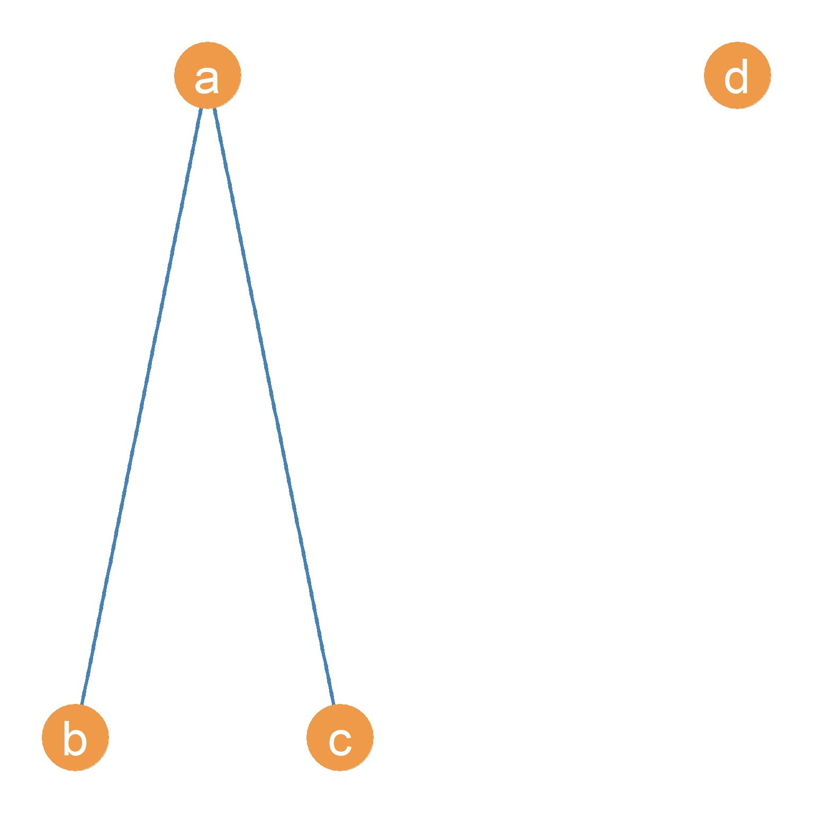
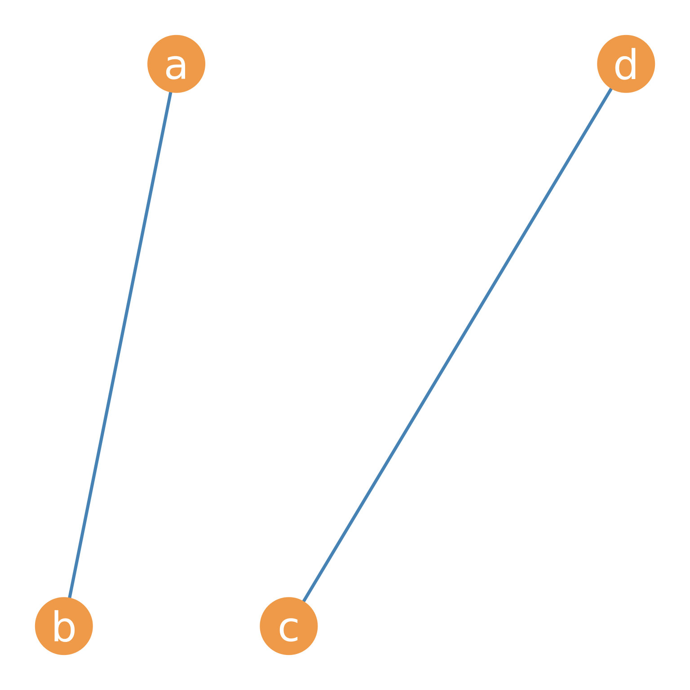
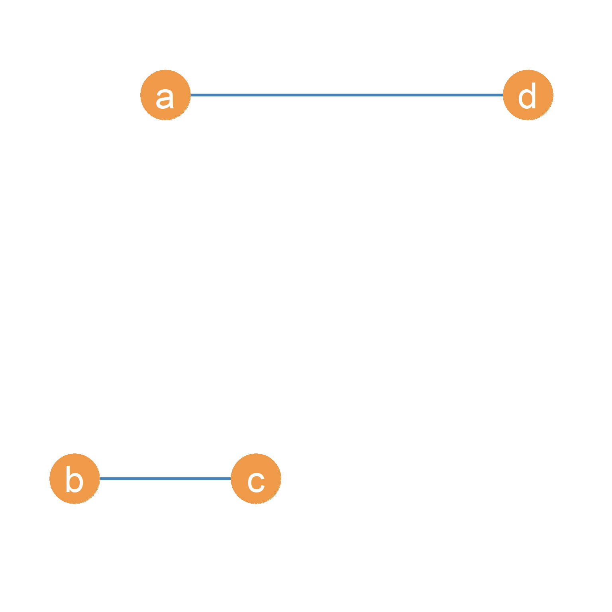
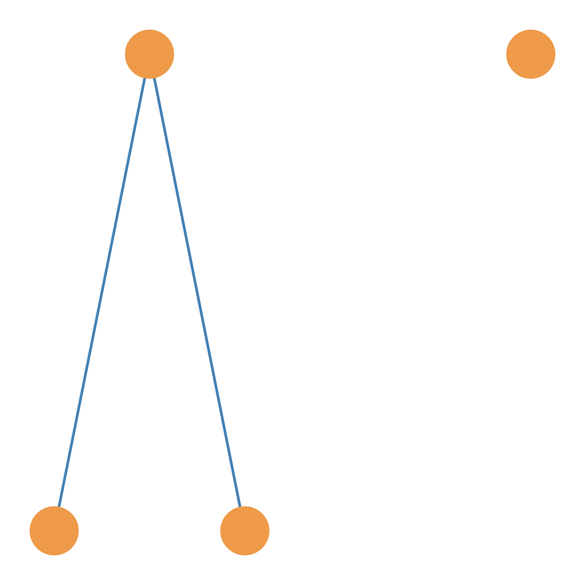
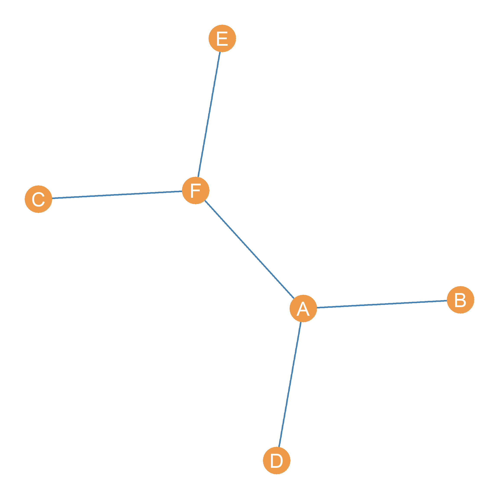
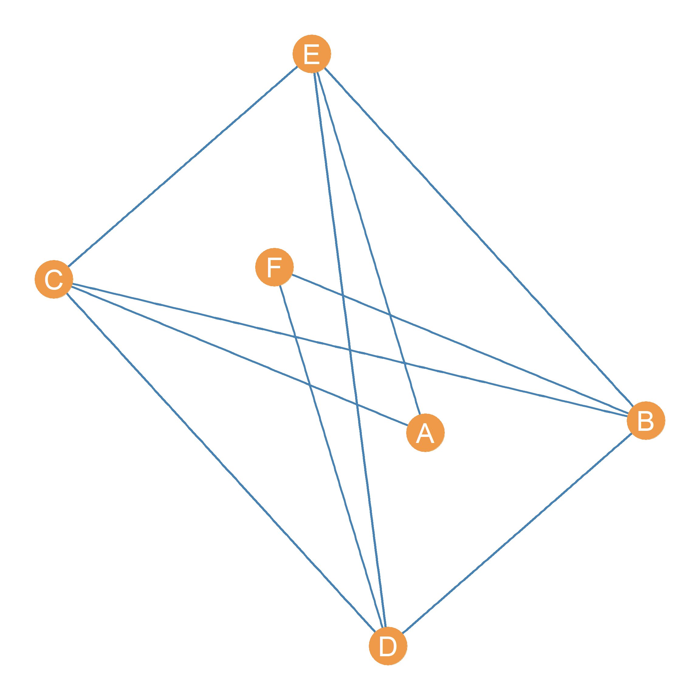
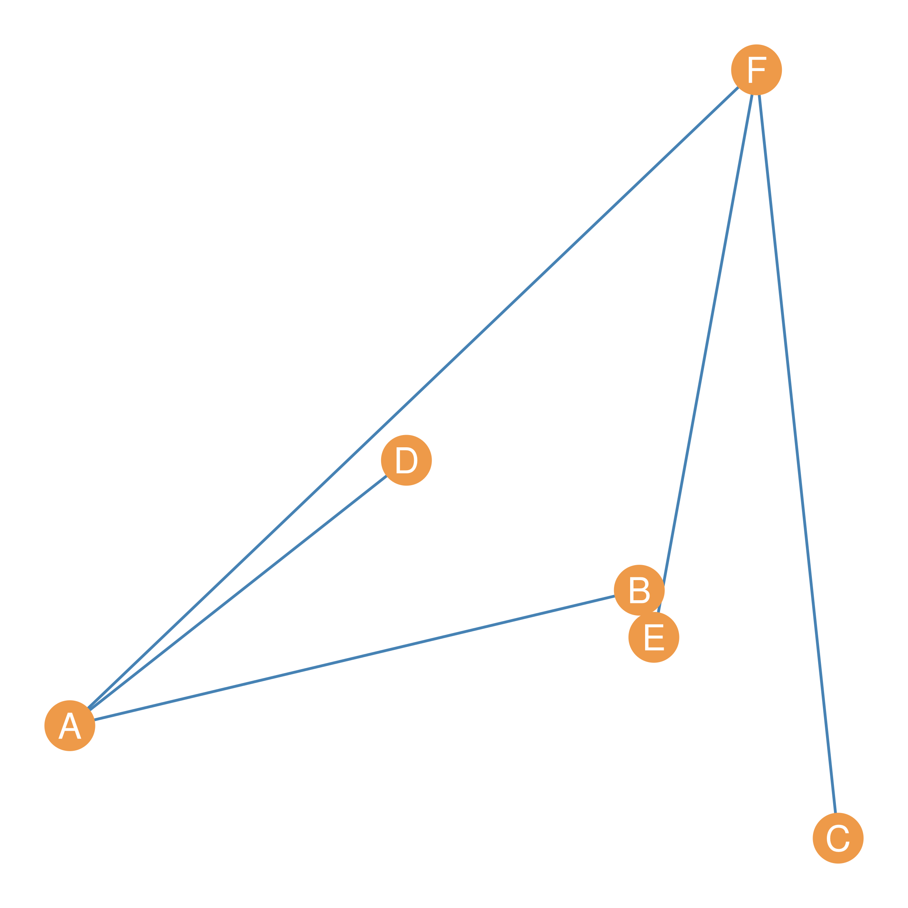
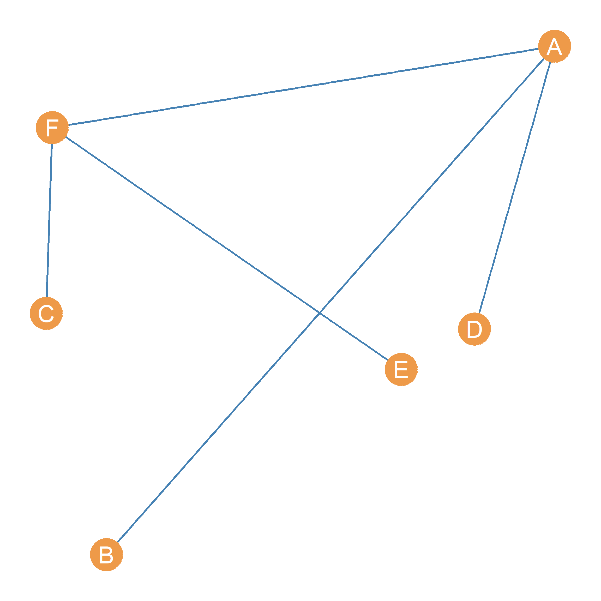

6 Introduction to Graphs
7
7.1 The Building Blocks of Graphs: Edges and Nodes
There is a mathematical definition of a graph which is slightly more technical. A graph is a set, usually represented by the capital letter G.
From high school math, you may remember that the mathematical definition of a set is simply a collection of entities, some of which may be ordered and some of which may themselves be other sets (a set can have other sets as its members, like in the movie Inception, where you can have a dream inside a dream). In the case of graphs, the entities inside the collection are a set of vertices (also called nodes) and a separate set of edges (also called links).
A graph is thus a set containing two sets as its members: a set of nodes (usually represented by the capital letter V) and a set of edges (usually represented by the capital letter E).
In set theory notation:
\[ G = \{V, E\} \tag{7.1}\]
This says that the members of the set defined by the graph, which we call G, are two other sets, called E and V (which themselves have members). The usual notation, like in Equation 7.1, is to enclose the members of a set in brackets \(\{\}\).
7.1.1 Nodes
The set of nodes usually represents actors in the real-world social network. Point and line diagrams (such as the ones shown in Chapter 5) are used to represent graphs, which in turn represent the real social network.
In these diagrams, nodes (representing actors) are usually drawn as circles, but they can be any shape or symbol. In social network analysis, actors are often either an individual or an organization, but, as we have seen, in wider applications of the network imagery in the physical and biological sciences (usually going under the banner of network science), nodes can represent anything that links up to other similar entities in a larger system. These include power generation stations and homes, servers and computers, animals in an ecosystem, towns, really anything of substance that we can define some kind of relation on, or from which some type of content can be said to be exchanged.
7.1.2 Edges
Edges represent a connection or a social tie between two nodes. As we will see, this can be a permanent relationship (e.g., “brother of”) or a more fleeting interaction (e.g., a text message, being in the same place at the same time). We will define social ties, how many types exist, and their properties later. For now, we can say that in social network analysis, connections are relationships, or links between nodes, and edges in a graph are meant to represent these connections.
In graph theory, the set of edges is best thought of as a collection of pairs of nodes, where the two members of the pair are the nodes involved in the social tie. So if node A is linked to node B via some social tie (friendship, study group, coworkers), then AB is a member of the edge set of the relevant graph. In set theory notation, this is usually written as \(AB \in E\), which is read as “the edge AB is a member of the set \(E\).” Edges can also be referred to by juxtaposing the two nodes that are connected by the edge. Thus, the edge AB can also be written as \(V_A V_B\).
In the case of power generation stations and homes, the edges can represent power lines. Meanwhile, servers and computers are connected via internet cables and Wi-Fi, while towns are connected by roads. The existence of edges signals the potential for content to flow, whether that’s power, computer data, or people in cars. In social networks, the content that flows between two nodes includes influence, advice, information, and support. All of these things are either positive or neutral, but the content that flows through social ties can also be negative, like a disease, bullying, gossip, or even murder (e.g., between rival gangs).
7.2 What is a Graph?
Figure 7.1 (a) shows an example of a point and line network diagram of a graph with four nodes and two edges. Nodes A, B, C, and D are circles representing actors A, B, C, and D, whose real-world social relationships we are interested in studying. The lines drawn between A and B and likewise between A and C represent the edges, indicating the presence of a social tie. Thus, the edges, AB and AC, appear in the network diagram. The lack of an edge between nodes B and C reflects the absence of a relationship between actors named B and C in the real world. The same goes for the lack of edges between D and the rest of the nodes in the graph.
So if we were to write out the graph shown in Figure 7.1 (a) in terms of the sets that define the graph, we would say:
\[ G = \{E, V\} \tag{7.2}\]
\[ E = \{AB, AC\} \tag{7.3}\]
\[ V = \{A, B, C, D\} \tag{7.4}\]
This says that the graph G shown in Figure 7.1 (a) is a set with two members, E and V, each of which is its own set. The edge set of G has two members, AB and AC. The node set of G has four members, A, B, C, and D. The number of members in a set is typically referred to as the cardinality of the set, denoted by \(|N|\), where \(N\) is the name of the set.
So, in the Figure 7.1 (a) case, the cardinality of the edge set is two \(|E| = 2\), and the cardinality of the vertex set is four \(|V| = 4\). These two basic graph properties are so important that they can serve as a “signature” for the graph. Sometimes people will refer to a graph as \(G(n, m)\) where \(n\) is the cardinality of the vertex set (number of nodes) and \(m\) is the cardinality of the edge set (number of edges). Thus, the graph in Figure 7.1 (a) is a \(G(4, 2)\) graph. Note that Figure 7.1 (a), this is not the only possible \(G(4, 2)\) graph. Figure 7.1 (b) and Figure 7.1 (c) show two other possible variations of a \(G(4, 2)\) graph.




7.3 Graph Labeling
In Figure 7.1 (a), Figure 7.1 (b), and Figure 7.1 (c), the nodes have letters which function as “names” for each. Thus, we can refer to node \(A\), or node \(B\), and so forth. These names are arbitrary; we can also use numbers \(\{1, 2, 3, ...\}\) or a combination of letters and numbers \(\{V_1, V_2, V_3,... \}\).
When the nodes of a graph are distinguished from one another using names, the graph is said to be labeled. Sometimes, the names don’t matter, so we don’t specify them, as in Figure 7.1 (d). In this case, the graph is said to be unlabeled.
Graph metrics, such as those we will compute starting at Chapter 11, are the same regardless of whether the graph is labeled. Most of the example graphs we will look at are labeled.
7.4 Trivial and Non-Trivial Graphs
The \(G(1, 0)\) graph, essentially that formed by an isolated person sitting alone in a room with no connections to others (which can represent the case of the Japanese Hikikomori), is sometimes called the trivial graph. Obviously, for purposes of social network analysis, the graphs that are used are non-trivial.
The smallest non-trivial graph, and thus the smallest unit of social analysis, is the \(G(2, 1)\) graph, the social unit formed by two people connected by a single link, sometimes referred to as a connected dyad. Connected dyads are the “hydrogen atom” of society, the building block from which all other larger networks are built because all graphs can be thought of as larger lego block structures built by joining together various \(G(2, 1)\) graphs. The \(G(2, 0)\) graph, on the other hand, is a disconnected dyad, like two people stuck in a deserted island who decided to no longer speak to one another.
7.5 Basic Graph Properties
Graphs have some basic properties that we need to learn about:
- In a graph, if two nodes are joined together by an edge, they are said to be adjacent. So in Figure 7.1 (a), nodes A and B are adjacent, as are nodes A and C. Pairs of nodes that are not linked by an edge, like nodes B and C, are said to be nonadjacent.
- The nodes at the two ends of each existing edge are said to be the end vertices of that edge. Each edge has two end vertices. As we have been doing, edges are named by typing together the names of their two end vertices. So the edge with nodes A and B as endpoints is called AB.
- If an edge “touches” a node (e.g., connects it to another node), we say that that edge is incident on that node. So in Figure 7.1 (a), the edge AB is incident on both nodes A and B. The relation of incidence will be important in a later lesson when we discuss node-level network metrics, such as degree centrality.
- In a graph, nodes that are not connected to any other nodes are called isolates. This means that in Figure 7.1 (a), node D is an isolate because it has zero edges incident upon it.
- If a node is connected to \(n-1\) nodes in a graph—basically, every other node but themselves—it is called a star node or a dominant node. The star node is the opposite of an isolate, having the maximum number of connections that can be observed for a single node in a social network.


7.6 The Graph Complement
Sometimes, when examining a graph, we may be interested in its evil twin. This is called the graph complement.
More technically, for any graph \(G\), its complement \(G'\) is a graph that meets the following two conditions:
- Every pair of nodes adjacent in \(G\) is non-adjacent in \(G'\).
- Every pair of nodes that are non-adjacent in \(G\) and are adjacent in \(G'\).
That is, the disconnected nodes in graph \(G\) are connected in its complement \(G'\), and the connected nodes in \(G\) are disconnected in \(G'\).
For instance, the \(G(6, 5)\) graph shown in Figure 7.2 (a), namely a graph with six nodes and five edges, and the complement of that graph shown in Figure 7.2 (b). As we can see, every pair of nodes that is connected in Figure 7.2 (a) is disconnected in Figure 7.2 (b) and vice versa.
What’s the graph complement useful for? As we will see later, we will sometimes be interested in counting the non-relations in a network, in addition to the relations. The complement (and its matrix representation) is useful for that.
7.7 Simple Graphs
Graphs like that shown in Figure 7.1 are called simple graphs. There are two requirements for a graph to count as a simple graph:
- First, there can only be one edge joining two nodes at any time. That is, there cannot be multiple lines linking together the same pair of nodes. We will see in a later lesson that certain types of graphs relax this restriction.
- The second requirement is that the graph does not contain any edges that have the same node as its two endpoints. These kinds of edges are called loops, and they are edges that connect a node to itself! Clearly, this does not make sense for most sociological applications.
With some exceptions, noted in subsequent lessons, simple graphs can represent most social networks.
7.8 Graphs are Not Pictures!
It is important to keep the mathematical notion of a “graph” (which is just a set of two sets of objects) from the idea of a “graph” that implies a visual representation or picture. The reason is that there is no true “picture” that represents a graph. The same mathematical graph can be represented in myriad of ways because the way we place the points and line in two dimensional space is completely arbitrary.


For instance, Figure 7.3 (a) shows the same graph shown in Figure 7.2 (a), but with the points and lines positioned in a different way. Figure 7.3 (a) and Figure 7.2 (a) are the same graph (they have the same set of nodes and the same set of edges) but as pictures, Figure 7.2 (a) and Figure 7.3 (a) are pretty different. Note that Figure 7.3 (b) is yet another way to draw the same graph, with the points and lines distributed differently in two-dimensional space.